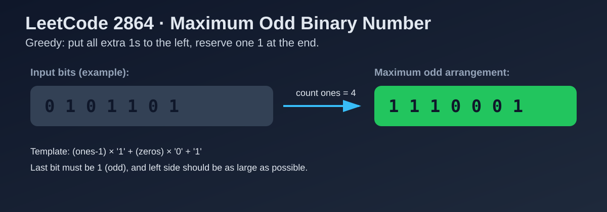

LeetCode 2864: Maximum Odd Binary Number (Greedy Bit Rearrangement)
LeetCode 2864GreedyBinary StringInterviewToday we solve LeetCode 2864 - Maximum Odd Binary Number.
Source: https://leetcode.com/problems/maximum-odd-binary-number/

English
Problem Summary
You are given a binary string s containing at least one '1'. Rearrange its characters to form the largest possible odd binary number. Return that rearranged string.
Key Insight
An odd binary number must end with 1. To maximize value, we should put as many 1s as possible in higher positions (left side), while reserving exactly one 1 for the last position.
Greedy Construction
Let ones be the count of '1' and n the length.
Build result as:
1) ones - 1 times '1'
2) then n - ones times '0'
3) then final '1'
This is optimal because every left shift of a 1 increases value more than any arrangement to its right.
Complexity Analysis
Time: O(n)
Space: O(n) for output string.
Common Pitfalls
- Forgetting to keep one 1 for the last position.
- Sorting descending and accidentally ending with 0 (not odd).
- Edge case: only one 1; result should be all 0 then trailing 1.
Reference Implementations (Java / Go / C++ / Python / JavaScript)
class Solution {
public String maximumOddBinaryNumber(String s) {
int ones = 0;
for (char ch : s.toCharArray()) {
if (ch == '1') ones++;
}
int n = s.length();
StringBuilder sb = new StringBuilder(n);
for (int i = 0; i < ones - 1; i++) sb.append('1');
for (int i = 0; i < n - ones; i++) sb.append('0');
sb.append('1');
return sb.toString();
}
}import "strings"
func maximumOddBinaryNumber(s string) string {
ones := 0
for i := 0; i < len(s); i++ {
if s[i] == '1' {
ones++
}
}
zeros := len(s) - ones
return strings.Repeat("1", ones-1) + strings.Repeat("0", zeros) + "1"
}class Solution {
public:
string maximumOddBinaryNumber(string s) {
int ones = 0;
for (char c : s) {
if (c == '1') ones++;
}
int zeros = (int)s.size() - ones;
return string(ones - 1, '1') + string(zeros, '0') + "1";
}
};class Solution:
def maximumOddBinaryNumber(self, s: str) -> str:
ones = s.count("1")
zeros = len(s) - ones
return "1" * (ones - 1) + "0" * zeros + "1"var maximumOddBinaryNumber = function(s) {
let ones = 0;
for (const ch of s) {
if (ch === '1') ones++;
}
const zeros = s.length - ones;
return '1'.repeat(ones - 1) + '0'.repeat(zeros) + '1';
};中文
题目概述
给定一个二进制字符串 s（保证至少有一个 '1'），你可以重排字符顺序，要求得到数值最大的奇数二进制串，返回这个结果。
核心思路
二进制奇数的必要条件是末位必须是 1。为了让整体数值最大，应把其余的 1 尽量放到高位（靠左），把 0 放中间，最后一位保留一个 1。
贪心构造
设 ones 为 '1' 的数量，字符串长度为 n：
1）先放 ones - 1 个 '1'
2）再放 n - ones 个 '0'
3）最后放 1 个 '1'
这是最优的，因为把 1 向左移动到更高位，收益总是更大。
复杂度分析
时间复杂度：O(n)
空间复杂度：O(n)（构造结果字符串）。
常见陷阱
- 忘记给末位留一个 1，导致结果不是奇数。
- 直接降序排序，可能让最后一位变成 0。
- 仅有一个 1 时，前面应全是 0，最后一位才是 1。
多语言参考实现（Java / Go / C++ / Python / JavaScript）
class Solution {
public String maximumOddBinaryNumber(String s) {
int ones = 0;
for (char ch : s.toCharArray()) {
if (ch == '1') ones++;
}
int n = s.length();
StringBuilder sb = new StringBuilder(n);
for (int i = 0; i < ones - 1; i++) sb.append('1');
for (int i = 0; i < n - ones; i++) sb.append('0');
sb.append('1');
return sb.toString();
}
}import "strings"
func maximumOddBinaryNumber(s string) string {
ones := 0
for i := 0; i < len(s); i++ {
if s[i] == '1' {
ones++
}
}
zeros := len(s) - ones
return strings.Repeat("1", ones-1) + strings.Repeat("0", zeros) + "1"
}class Solution {
public:
string maximumOddBinaryNumber(string s) {
int ones = 0;
for (char c : s) {
if (c == '1') ones++;
}
int zeros = (int)s.size() - ones;
return string(ones - 1, '1') + string(zeros, '0') + "1";
}
};class Solution:
def maximumOddBinaryNumber(self, s: str) -> str:
ones = s.count("1")
zeros = len(s) - ones
return "1" * (ones - 1) + "0" * zeros + "1"var maximumOddBinaryNumber = function(s) {
let ones = 0;
for (const ch of s) {
if (ch === '1') ones++;
}
const zeros = s.length - ones;
return '1'.repeat(ones - 1) + '0'.repeat(zeros) + '1';
};
Comments